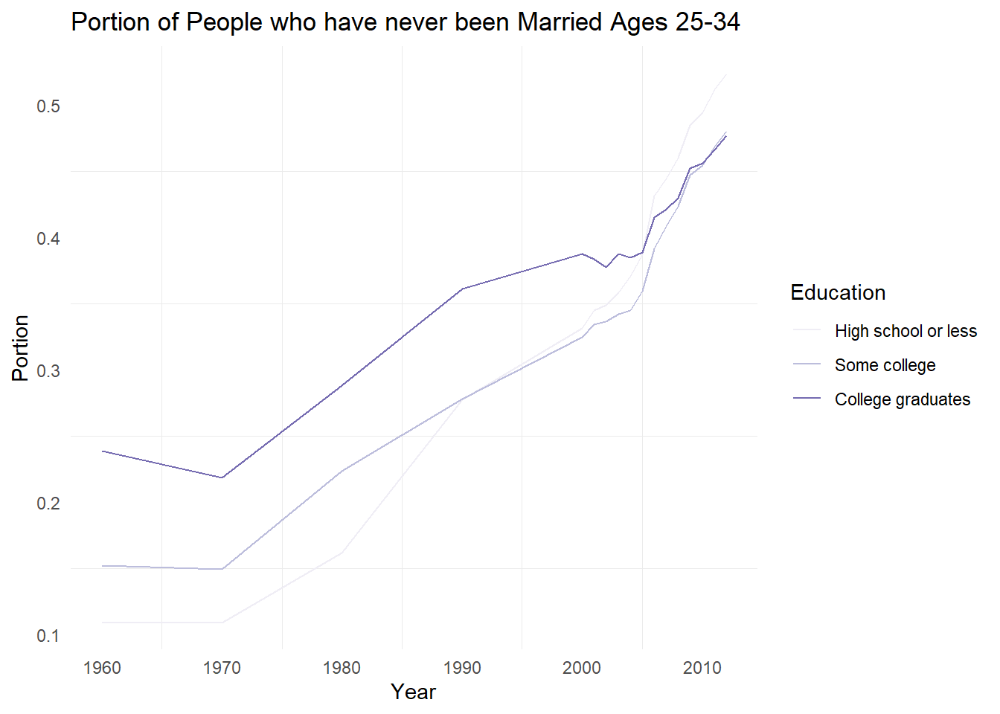
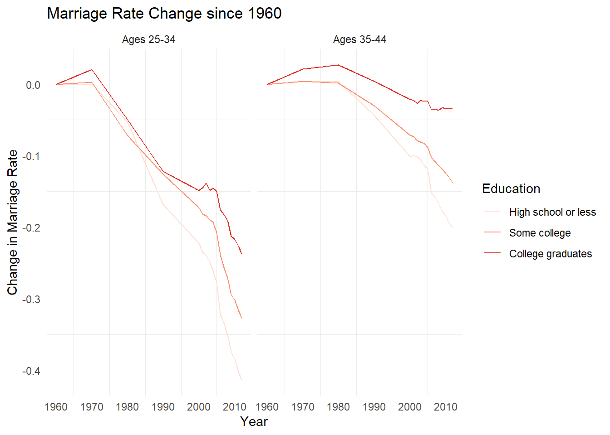

both_sexes <- read.csv("both_sexes.csv")
head(both_sexes)## X year date all_2534 HS_2534 SC_2534
## 1 1 1960 1/1/1960 0.1233145 0.1095332 0.1522818
## 2 2 1970 1/1/1970 0.1269715 0.1094000 0.1495096
## 3 3 1980 1/1/1980 0.1991767 0.1617313 0.2236916
## 4 4 1990 1/1/1990 0.2968306 0.2777491 0.2780912
## 5 5 2000 1/1/2000 0.3450087 0.3316545 0.3249205
## 6 6 2001 1/1/2001 0.3527767 0.3446069 0.3341101
## BAp_2534 BAo_2534 GD_2534 White_2534 Black_2534
## 1 0.2389952 0.2389952 NA 0.1164848 0.1621855
## 2 0.2187031 0.2187031 NA 0.1179043 0.1855163
## 3 0.2881646 0.2881646 NA 0.1824126 0.3137500
## 4 0.3612968 0.3656655 0.3474505 0.2639256 0.4838556
## 5 0.3874906 0.3939579 0.3691740 0.3127149 0.5144994
## 6 0.3835686 0.3925148 0.3590304 0.3183506 0.5437985
## Hisp_2534 NE_2534 MA_2534 Midwest_2534
## 1 0.1393736 0.1504184 0.1628934 0.1121467
## 2 0.1298769 0.1517231 0.1640680 0.1153741
## 3 0.1885440 0.2414327 0.2505925 0.1828339
## 4 0.2962372 0.3500384 0.3623321 0.2755046
## 5 0.3180681 0.4091852 0.4175565 0.3308022
## 6 0.3321214 0.4200581 0.4294281 0.3344332
## South_2534 Mountain_2534 Pacific_2534 poor_2534
## 1 0.1090562 0.09152117 0.1198758 0.1371597
## 2 0.1126220 0.10293602 0.1374964 0.1717202
## 3 0.1688435 0.17434230 0.2334279 0.3100591
## 4 0.2639794 0.25264326 0.3319579 0.4199108
## 5 0.3099712 0.30621032 0.3753061 0.5033676
## 6 0.3182688 0.30980779 0.3844799 0.5178771
## mid_2534 rich_2534 all_3544 HS_3544
## 1 0.07514929 0.2066776 0.07058157 0.06860309
## 2 0.08159207 0.1724093 0.06732520 0.06511964
## 3 0.14825303 0.1851082 0.06883378 0.06429102
## 4 0.24320008 0.2783226 0.11191800 0.11210043
## 5 0.30202036 0.2717386 0.15605880 0.16993703
## 6 0.31716118 0.2532041 0.15642529 0.16870156
## SC_3544 BAp_3544 BAo_3544 GD_3544 White_3544
## 1 0.06663695 0.1326265 0.1326265 NA 0.06825586
## 2 0.06271724 0.1116899 0.1116899 NA 0.06250372
## 3 0.06531334 0.1056102 0.1056102 NA 0.05966739
## 4 0.09699372 0.1285172 0.1258567 0.1328018 0.09611312
## 5 0.13800404 0.1541238 0.1536299 0.1550970 0.13207032
## 6 0.13986044 0.1548151 0.1524923 0.1595169 0.13287455
## Black_3544 Hisp_3544 NE_3544 MA_3544
## 1 0.08836728 0.07307651 0.09194322 0.09347468
## 2 0.10290904 0.07070500 0.08570110 0.09040725
## 3 0.13140081 0.08110790 0.07997323 0.09744428
## 4 0.22010298 0.12194206 0.12785915 0.14354989
## 5 0.30239381 0.15469520 0.17327422 0.18819256
## 6 0.30857796 0.14953050 0.16653497 0.18315109
## Midwest_3544 South_3544 Mountain_3544 Pacific_3544
## 1 0.06863360 0.06026353 0.04739747 0.05822486
## 2 0.06156272 0.05966057 0.04651163 0.06347796
## 3 0.06070641 0.05914089 0.04880077 0.07552538
## 4 0.10157576 0.09637035 0.09189904 0.13134638
## 5 0.14539201 0.14230600 0.13584194 0.17480047
## 6 0.14794407 0.14312592 0.13943820 0.17694864
## poor_3544 mid_3544 rich_3544 all_4554
## 1 0.1019749 0.04717272 0.08553870 0.07254649
## 2 0.1117548 0.04566838 0.06499159 0.05968794
## 3 0.1291426 0.05050321 0.04445951 0.05250871
## 4 0.2012208 0.09024739 0.06573916 0.05947824
## 5 0.2813137 0.12815751 0.08622046 0.08804394
## 6 0.2919112 0.13267625 0.06803283 0.08823342
## HS_4554 SC_4554 BAp_4554 BAo_4554
## 1 0.06840791 0.07903755 0.15360889 0.15360889
## 2 0.05833439 0.05443478 0.10466047 0.10466047
## 3 0.05036563 0.04816180 0.08623774 0.08623774
## 4 0.05988244 0.04654087 0.07301884 0.06416529
## 5 0.09442809 0.07558786 0.09208417 0.09097472
## 6 0.09189007 0.07795481 0.09333365 0.09313480
## GD_4554 White_4554 Black_4554 Hisp_4554
## 1 NA 0.07246692 0.06913249 0.06636058
## 2 NA 0.05754799 0.07899168 0.05810740
## 3 NA 0.04765354 0.08624602 0.06522951
## 4 0.08394886 0.05092552 0.11617699 0.07613556
## 5 0.09362802 0.07578174 0.17587334 0.09418009
## 6 0.09362876 0.07516912 0.18154531 0.09409896
## NE_4554 MA_4554 Midwest_4554 South_4554
## 1 0.10236412 0.09264788 0.07285321 0.05977295
## 2 0.08028082 0.07860635 0.05791163 0.05174462
## 3 0.06930253 0.07508466 0.04807290 0.04485348
## 4 0.07047502 0.08373134 0.05398391 0.05043636
## 5 0.10232170 0.11269659 0.08302437 0.07631858
## 6 0.09868408 0.10953635 0.08207629 0.07886512
## Mountain_4554 Pacific_4554 poor_4554 mid_4554
## 1 0.04754183 0.05996993 0.1030055 0.05364421
## 2 0.03970134 0.04826312 0.1016489 0.04221637
## 3 0.03374438 0.04958992 0.1003011 0.03830266
## 4 0.04459411 0.06461875 0.1148335 0.04562332
## 5 0.07637774 0.09896832 0.1718976 0.07055672
## 6 0.07405971 0.10119511 0.1759369 0.07407508
## rich_4554 nokids_all_2534 kids_all_2534
## 1 0.07908591 0.4640564 0.002820625
## 2 0.05142867 0.4309043 0.009868596
## 3 0.03311296 0.4464304 0.025285667
## 4 0.03136386 0.5425242 0.060277451
## 5 0.03897342 0.5714531 0.099472713
## 6 0.02857320 0.5852213 0.110178467
## nokids_HS_2534 nokids_SC_2534 nokids_BAp_2534
## 1 0.4430148 0.5000402 0.5619099
## 2 0.4246779 0.4333479 0.4554766
## 3 0.4319342 0.4505900 0.4719700
## 4 0.5464881 0.5238446 0.5560765
## 5 0.5711395 0.5700042 0.5729677
## 6 0.6045475 0.5810912 0.5698644
## nokids_BAo_2534 nokids_GD_2534 kids_HS_2534
## 1 0.5619099 NA 0.003318886
## 2 0.4554766 NA 0.012465915
## 3 0.4719700 NA 0.031930752
## 4 0.5633301 0.5332628 0.078470444
## 5 0.5862213 0.5367160 0.127193577
## 6 0.5864967 0.5258800 0.141395652
## kids_SC_2534 kids_BAp_2534 kids_BAo_2534
## 1 0.001150824 0.000575107 0.000575107
## 2 0.003699982 0.001468343 0.001468343
## 3 0.018135401 0.006254436 0.006254436
## 4 0.052032702 0.017124104 0.018176603
## 5 0.097625310 0.037002445 0.040100987
## 6 0.110030662 0.039980145 0.044583801
## kids_GD_2534 nokids_poor_2534 nokids_mid_2534
## 1 NA 0.4933061 0.4100080
## 2 NA 0.5097742 0.3764538
## 3 NA 0.5740402 0.3998250
## 4 0.01374234 0.6546908 0.5186604
## 5 0.02761467 0.7055451 0.5690228
## 6 0.02645041 0.7147334 0.5864741
## nokids_rich_2534 kids_poor_2534 kids_mid_2534
## 1 0.4921184 0.008722711 0.000753206
## 2 0.4288948 0.029974945 0.003377115
## 3 0.3848089 0.077926214 0.010236887
## 4 0.4750156 0.170763774 0.027465525
## 5 0.4458023 0.256281918 0.059784517
## 6 0.4461111 0.280146488 0.067795457
## kids_rich_2534
## 1 0.000802733
## 2 0.003043566
## 3 0.006831722
## 4 0.018232913
## 5 0.029564470
## 6 0.033654050glimpse(both_sexes)## Rows: 17
## Columns: 75
## $ X <int> 1, 2, 3, 4, 5, 6, 7, 8, 9, 1~
## $ year <int> 1960, 1970, 1980, 1990, 2000~
## $ date <chr> "1/1/1960", "1/1/1970", "1/1~
## $ all_2534 <dbl> 0.1233145, 0.1269715, 0.1991~
## $ HS_2534 <dbl> 0.1095332, 0.1094000, 0.1617~
## $ SC_2534 <dbl> 0.1522818, 0.1495096, 0.2236~
## $ BAp_2534 <dbl> 0.2389952, 0.2187031, 0.2881~
## $ BAo_2534 <dbl> 0.2389952, 0.2187031, 0.2881~
## $ GD_2534 <dbl> NA, NA, NA, 0.3474505, 0.369~
## $ White_2534 <dbl> 0.1164848, 0.1179043, 0.1824~
## $ Black_2534 <dbl> 0.1621855, 0.1855163, 0.3137~
## $ Hisp_2534 <dbl> 0.1393736, 0.1298769, 0.1885~
## $ NE_2534 <dbl> 0.1504184, 0.1517231, 0.2414~
## $ MA_2534 <dbl> 0.1628934, 0.1640680, 0.2505~
## $ Midwest_2534 <dbl> 0.1121467, 0.1153741, 0.1828~
## $ South_2534 <dbl> 0.1090562, 0.1126220, 0.1688~
## $ Mountain_2534 <dbl> 0.09152117, 0.10293602, 0.17~
## $ Pacific_2534 <dbl> 0.1198758, 0.1374964, 0.2334~
## $ poor_2534 <dbl> 0.1371597, 0.1717202, 0.3100~
## $ mid_2534 <dbl> 0.07514929, 0.08159207, 0.14~
## $ rich_2534 <dbl> 0.2066776, 0.1724093, 0.1851~
## $ all_3544 <dbl> 0.07058157, 0.06732520, 0.06~
## $ HS_3544 <dbl> 0.06860309, 0.06511964, 0.06~
## $ SC_3544 <dbl> 0.06663695, 0.06271724, 0.06~
## $ BAp_3544 <dbl> 0.1326265, 0.1116899, 0.1056~
## $ BAo_3544 <dbl> 0.1326265, 0.1116899, 0.1056~
## $ GD_3544 <dbl> NA, NA, NA, 0.1328018, 0.155~
## $ White_3544 <dbl> 0.06825586, 0.06250372, 0.05~
## $ Black_3544 <dbl> 0.08836728, 0.10290904, 0.13~
## $ Hisp_3544 <dbl> 0.07307651, 0.07070500, 0.08~
## $ NE_3544 <dbl> 0.09194322, 0.08570110, 0.07~
## $ MA_3544 <dbl> 0.09347468, 0.09040725, 0.09~
## $ Midwest_3544 <dbl> 0.06863360, 0.06156272, 0.06~
## $ South_3544 <dbl> 0.06026353, 0.05966057, 0.05~
## $ Mountain_3544 <dbl> 0.04739747, 0.04651163, 0.04~
## $ Pacific_3544 <dbl> 0.05822486, 0.06347796, 0.07~
## $ poor_3544 <dbl> 0.1019749, 0.1117548, 0.1291~
## $ mid_3544 <dbl> 0.04717272, 0.04566838, 0.05~
## $ rich_3544 <dbl> 0.08553870, 0.06499159, 0.04~
## $ all_4554 <dbl> 0.07254649, 0.05968794, 0.05~
## $ HS_4554 <dbl> 0.06840791, 0.05833439, 0.05~
## $ SC_4554 <dbl> 0.07903755, 0.05443478, 0.04~
## $ BAp_4554 <dbl> 0.15360889, 0.10466047, 0.08~
## $ BAo_4554 <dbl> 0.15360889, 0.10466047, 0.08~
## $ GD_4554 <dbl> NA, NA, NA, 0.08394886, 0.09~
## $ White_4554 <dbl> 0.07246692, 0.05754799, 0.04~
## $ Black_4554 <dbl> 0.06913249, 0.07899168, 0.08~
## $ Hisp_4554 <dbl> 0.06636058, 0.05810740, 0.06~
## $ NE_4554 <dbl> 0.10236412, 0.08028082, 0.06~
## $ MA_4554 <dbl> 0.09264788, 0.07860635, 0.07~
## $ Midwest_4554 <dbl> 0.07285321, 0.05791163, 0.04~
## $ South_4554 <dbl> 0.05977295, 0.05174462, 0.04~
## $ Mountain_4554 <dbl> 0.04754183, 0.03970134, 0.03~
## $ Pacific_4554 <dbl> 0.05996993, 0.04826312, 0.04~
## $ poor_4554 <dbl> 0.1030055, 0.1016489, 0.1003~
## $ mid_4554 <dbl> 0.05364421, 0.04221637, 0.03~
## $ rich_4554 <dbl> 0.07908591, 0.05142867, 0.03~
## $ nokids_all_2534 <dbl> 0.4640564, 0.4309043, 0.4464~
## $ kids_all_2534 <dbl> 0.002820625, 0.009868596, 0.~
## $ nokids_HS_2534 <dbl> 0.4430148, 0.4246779, 0.4319~
## $ nokids_SC_2534 <dbl> 0.5000402, 0.4333479, 0.4505~
## $ nokids_BAp_2534 <dbl> 0.5619099, 0.4554766, 0.4719~
## $ nokids_BAo_2534 <dbl> 0.5619099, 0.4554766, 0.4719~
## $ nokids_GD_2534 <dbl> NA, NA, NA, 0.5332628, 0.536~
## $ kids_HS_2534 <dbl> 0.003318886, 0.012465915, 0.~
## $ kids_SC_2534 <dbl> 0.001150824, 0.003699982, 0.~
## $ kids_BAp_2534 <dbl> 0.000575107, 0.001468343, 0.~
## $ kids_BAo_2534 <dbl> 0.000575107, 0.001468343, 0.~
## $ kids_GD_2534 <dbl> NA, NA, NA, 0.01374234, 0.02~
## $ nokids_poor_2534 <dbl> 0.4933061, 0.5097742, 0.5740~
## $ nokids_mid_2534 <dbl> 0.4100080, 0.3764538, 0.3998~
## $ nokids_rich_2534 <dbl> 0.4921184, 0.4288948, 0.3848~
## $ kids_poor_2534 <dbl> 0.008722711, 0.029974945, 0.~
## $ kids_mid_2534 <dbl> 0.000753206, 0.003377115, 0.~
## $ kids_rich_2534 <dbl> 0.000802733, 0.003043566, 0.~both_sexes_reduced <- both_sexes %>%
select(year, HS_2534, SC_2534, BAp_2534, HS_3544, SC_3544, BAp_3544) %>%
pivot_longer(!year, names_to = "education", values_to = "rate") %>%
separate(education, c('education', 'age')) %>%
mutate(rate = 1-rate) %>%
group_by(education, age) %>%
arrange(education, year) %>%
mutate(change_b = rate - first(rate)) %>%
ungroup()
both_sexes_reduced$education <- case_when(
both_sexes_reduced$education == "SC" ~ "Some college",
both_sexes_reduced$education == "HS" ~ "High school or less",
T ~ 'College graduates')
both_sexes_reduced$education <- factor(both_sexes_reduced$education,
levels = c("High school or less", "Some college", "College graduates"))
both_sexes_reduced$age <- case_when(
both_sexes_reduced$age == "2534" ~ "Ages 25-34",
T ~ "Ages 35-44")
both_sexes_reduced$age <- factor(
both_sexes_reduced$age, levels = c("Ages 25-34", "Ages 35-44")) age25_34 <- both_sexes_reduced %>% filter(age == "Ages 25-34") %>% mutate(rate = 1-rate)
not_mar_plot <- ggplot(age25_34,
aes(x = year,
y = rate,
color = education)) +
geom_line() +
labs(y = "Portion",
x = "Year",
color = "Education") +
ggtitle("Portion of People who have never been Married Ages 25-34") +
theme_minimal() +
theme(axis.title = element_text(),
panel.grid.major = element_blank()) +
scale_color_brewer(palette = "Purples")
not_mar_plot
mar_rate_plot <- ggplot(both_sexes_reduced,
aes(x = year,
y = change_b,
color = education)) +
geom_line() +
facet_wrap(vars(age)) +
labs(y = "Change in Marriage Rate",
x = "Year",
color = "Education") +
ggtitle("Marriage Rate Change since 1960") +
theme_minimal() +
theme(axis.title = element_text(),
panel.grid.major = element_blank()) +
scale_color_brewer(palette = 'Reds')
mar_rate_plot
Copyright © 2016 Skynet, Inc. All rights reserved.